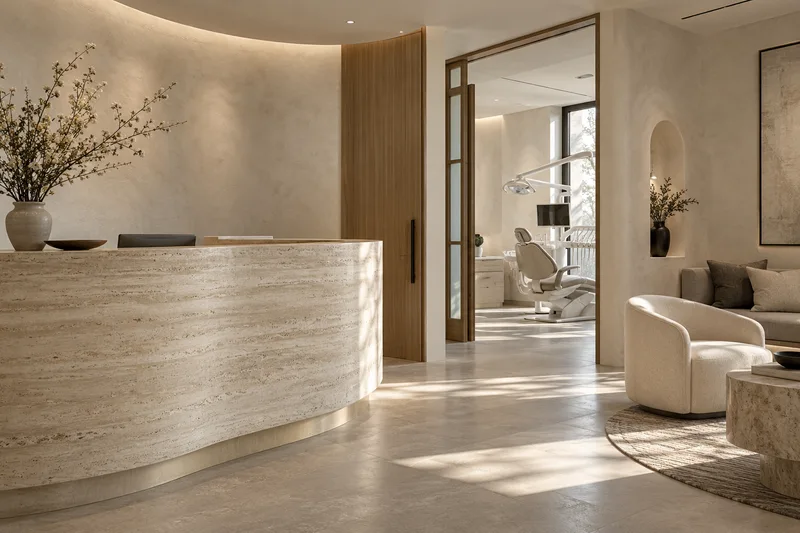

01 / Tout commence par un besoin
Il cherche
un dentiste.
Une question. Son téléphone. Une recherche.
Implants dentaires près de moi
Scène illustrative · Image générée par IA
01 / Tout commence par un besoin
Une question. Son téléphone. Une recherche.

02 / Le clic ouvre une porte
Votre univers. Votre approche. Sa première impression.


03 / La question qui change la suite
Un message qui le comprend. Un parcours qui le guide.
Voyons commentTout commence par ce qu’il cherche. Et ce qu’il ressent.
Voyons comment une campagne, un message et un site peuvent l’accompagner, une étape à la fois.
01 / Il cherche un soin
« Où trouver une solution près de moi ? »
Nous construisons vos campagnes Google Ads autour des soins proposés et de votre zone. L’objectif : rendre votre clinique visible sur les recherches qui la concernent.
Le patient cherche des implants à Montréal. La campagne est pensée pour cette intention et cette localisation.
02 / Derrière sa recherche, une émotion
« Je n’ose plus sourire. Mais le traitement me fait peur. »
Le titre de l’annonce parle de ce qu’il souhaite retrouver. Le message l’aide à envisager la suite : découvrir ses options, à son rythme.
« J’aimerais sourire
sans me cacher. »
votre-clinique.ca / implants
Implants dentaires à Montréal. Découvrez vos options, à votre rythme.
03 / Il vient de cliquer
« Est-ce que je vais me sentir en confiance ici ? »
La page reprend le message de l’annonce. Design premium, présentation de votre équipe, explications claires : chaque détail l’aide à se repérer et à découvrir votre clinique.

Une équipe.04 / Il envisage la suite
« J’aimerais avancer. Par quoi je commence ? »
Une urgence ? L’accès au téléphone passe en premier. Une consultation ? Quelques questions, des photos facultatives et une demande de rendez-vous, étape par étape.
Un premier choix, et on vous guide.
05 / Il prend contact
Et vous, docteur : qu’a produit la campagne ?
On suit les appels et les formulaires issus des campagnes. Votre équipe prend le relais pour comprendre le besoin et confirmer le rendez-vous.
Le parcours est pensé. Choisissons votre formule.
Un site premium + la gestion Google Ads.
Deux modes de facturation pour le même parcours.
Une facturation liée aux contacts générés par les campagnes.
Un forfait de gestion pour accompagner vos campagnes dans la durée.
Le budget publicitaire est payé par la clinique. Création du site et conditions de gestion détaillées au devis.
Sans connexion au logiciel dentaire.
Pour lancer le mouvement
À l’achat du site. Budget publicitaire à la charge du cabinet.